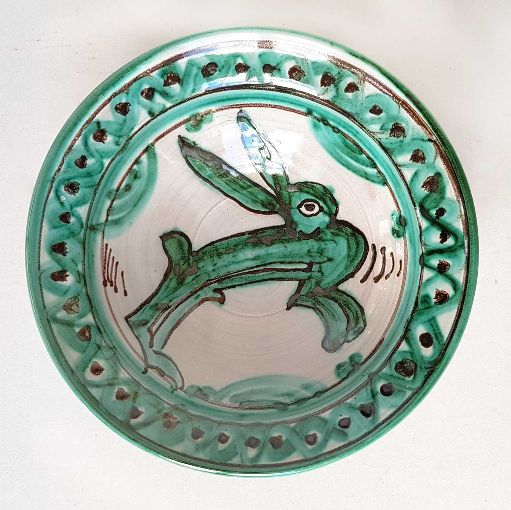

Faïence
Narbonnaise


⟹ Artisanat & Savoir-faire ⟸
À Narbonne, l'histoire de la céramique est indissociable de celle d'une grande ville méditerranéenne. Fondée en 118 av. J.-C. comme première colonie romaine durable en Gaule, Narbo Martius devient la capitale de la Gaule Narbonnaise et l'un des principaux carrefours commerciaux de l'Occident romain. Vaisselle, amphores, tuiles, briques et grands récipients de stockage circulent alors en quantité dans son territoire et par son complexe portuaire. La céramique est à la fois un objet de la vie quotidienne, un emballage commercial et un matériau de construction.
Les découvertes archéologiques réalisées autour de Narbonne montrent l'importance de cette économie de la terre cuite. À Sallèles-d'Aude, à une douzaine de kilomètres au nord de la ville, l'atelier gallo-romain aujourd'hui présenté à Amphoralis a livré fours, dépotoirs et vestiges liés à une production de grande ampleur. Les potiers y disposaient des trois ressources essentielles : l'argile, l'eau et le bois. Ils fabriquaient notamment des amphores vinaires destinées à accompagner le développement de la viticulture et des échanges commerciaux de la Narbonnaise.

Après l'Antiquité, les techniques, les formes et les réseaux commerciaux évoluent, mais Narbonne reste ouverte aux influences de la Méditerranée. Au Moyen Âge, la circulation des poteries entre péninsule Ibérique, Languedoc, Provence et monde méditerranéen favorise l'introduction de décors et de procédés nouveaux. La ville occupe une place particulièrement intéressante dans l'histoire des céramiques à décor brun et vert, dont des exemplaires narbonnais du XIVe siècle ont fait l'objet d'études archéologiques spécialisées.
Ces décors appartiennent à une grande famille de céramiques médiévales méridionales utilisant des oxydes métalliques : le manganèse fournit les tons bruns à presque noirs, tandis que le cuivre produit les verts. Appliqués sur un fond clair, souvent associé à une glaçure ou à un émail opacifié, ces contrastes donnent aux plats, coupes et récipients une identité visuelle forte. Ils témoignent des échanges techniques et esthétiques qui parcourent alors les rivages de la Méditerranée occidentale, notamment entre le Midi de la France et les traditions hispano-mauresques.
Il faut cependant distinguer cette longue histoire de la céramique narbonnaise de la notion plus précise de faïence. Au sens technique, la faïence est une terre cuite poreuse recouverte d'un émail qui lui donne une surface claire et imperméable, généralement propice au décor peint. À partir de la Renaissance et surtout aux XVIIe et XVIIIe siècles, les grands centres français et méridionaux perfectionnent cet art et multiplient les décors. Narbonne se trouve alors au contact de productions venues de nombreux foyers réputés.
Le goût narbonnais pour cet art est aujourd'hui particulièrement visible dans les collections du Palais-musée des Archevêques. Le musée, créé en 1833, conserve dans le Palais Neuf un remarquable ensemble de faïences des XVIIe et XVIIIe siècles. On y rencontre notamment des productions de Nevers, Moustiers, Marseille ou Rouen, auxquelles s'ajoutent des ensembles méridionaux et d'autres céramiques françaises ou étrangères. Ces collections montrent combien la faïence fut à la fois objet utilitaire, signe de distinction sociale et support privilégié de la peinture décorative.
Les faïences méridionales conservées à Narbonne permettent aussi de replacer la ville dans un espace culturel plus vaste. Montpellier, Moustiers, Marseille, Varages, Toulouse ou d'autres centres du Midi développèrent leurs propres palettes et répertoires. Les pièces circulaient par les routes terrestres, les marchés et les ports ; elles entraient dans les maisons, les pharmacies, les cuisines et les tables aisées. Narbonne, ville de passage et de commerce, fut naturellement réceptive à cette diversité.
Les collections archéologiques et muséales constituent aujourd'hui une mémoire matérielle essentielle. Elles permettent de suivre l'évolution des usages : amphores et dolia antiques pour le transport ou le stockage, céramiques communes de cuisine, vaisselle médiévale glaçurée, puis faïences décorées de l'époque moderne. Elles montrent aussi que derrière le mot « céramique » se cachent des techniques différentes, chacune répondant à des besoins précis et à des traditions de cuisson, de pâte et de décor.
Dans l'artisanat contemporain du Narbonnais, cet héritage n'est pas reproduit à l'identique : il sert plutôt de répertoire d'inspiration. Des céramistes travaillent aujourd'hui la terre cuite, le grès ou la faïence en puisant dans les couleurs de la Méditerranée, les formes antiques, les motifs archéologiques ou les usages traditionnels. Plats, pichets, coupes, gargoulettes et pièces décoratives prolongent ainsi une relation à la terre qui, dans le Narbonnais, remonte à plus de deux millénaires.
Parler de « faïence narbonnaise » revient donc moins à désigner une manufacture unique ou une appellation historique strictement définie qu'à évoquer un patrimoine céramique narbonnais exceptionnellement riche. De la production gallo-romaine aux décors bruns et verts du Moyen Âge, des grandes faïences des XVIIe et XVIIIe siècles conservées au musée aux créations artisanales actuelles, Narbonne offre une remarquable continuité de formes, de techniques, de collections et d'influences méditerranéennes.
Cette profondeur historique commence même avant la faïence proprement dite. Dans le bassin narbonnais, l'abondance des argiles, la présence de combustible et la proximité de grands axes de circulation ont favorisé très tôt les métiers de la terre. Sous l'Empire romain, l'immense marché constitué par Narbo Martius, son port et son arrière-pays viticole stimule une production spécialisée : les ateliers fabriquent aussi bien des matériaux de construction que de la vaisselle et surtout des contenants destinés au commerce du vin.
Le site de Sallèles-d'Aude en fournit un témoignage exceptionnel. Découvert au XXe siècle puis fouillé à partir de 1976, cet ensemble de potiers gallo-romains a fonctionné durant les premiers siècles de notre ère. Les recherches y ont identifié fours, carrières d'argile, espaces de travail et habitat. Les amphores vinaires qui y étaient produites rappellent que la poterie narbonnaise était intimement liée à l'économie agricole et aux réseaux commerciaux de la province romaine.
La céramique constitue aussi un précieux document archéologique parce qu'elle se conserve dans le sol lorsque le bois, les textiles ou de nombreux objets organiques disparaissent. Les fragments découverts à Narbonne et dans son territoire permettent ainsi de reconstituer les habitudes culinaires, les échanges commerciaux et l'évolution des goûts sur près de deux millénaires. Chaque pâte, glaçure, forme ou décor peut renseigner sur une origine, une technique ou une période.
Le Moyen Âge narbonnais marque une autre étape remarquable. Des recherches consacrées aux faïences à décor brun et vert du XIVe siècle ont mis en évidence l'importance des découvertes faites à Narbonne. Ces pièces appartiennent au vaste courant des céramiques méditerranéennes décorées à l'aide d'oxydes métalliques : le manganèse pour le brun et le cuivre pour le vert, sur un fond clair. Elles replacent Narbonne dans un espace d'échanges artistiques reliant Languedoc, Catalogne, péninsule Ibérique et autres rivages de Méditerranée occidentale.
La technique de la faïence stannifère représente une étape décisive : l'ajout d'oxyde d'étain à la glaçure permet d'obtenir une surface blanche et opaque qui devient un véritable support pictural. Sur ce fond lumineux, le peintre peut développer motifs végétaux, scènes figurées, armoiries ou décors géométriques. Les oxydes métalliques changent de couleur sous l'action du feu, ce qui exige une solide connaissance des matières, de la température et de l'atmosphère du four.
À l'époque moderne, Narbonne ne doit pas être présentée comme l'équivalent d'une grande manufacture unique comparable à Nevers, Moustiers ou Marseille. Son importance tient aussi à sa position de ville de circulation et de collection. Les faïences venues des grands centres français et méridionaux entrent dans les demeures, les établissements religieux, les pharmacies et les collections locales. Elles illustrent la transformation progressive de la vaisselle : l'objet utilitaire devient également objet de représentation et de décor.
Les collections narbonnaises en gardent aujourd'hui une trace particulièrement riche. Des pièces de Nevers, Montpellier, Moustiers, Marseille, Rouen, Toulouse, Varages et d'autres foyers permettent de comparer formes, palettes et répertoires. Elles témoignent de la diversité extraordinaire de la faïence française des XVIIe et XVIIIe siècles et de la place de Narbonne comme réceptacle de ces influences.
La fabrication elle-même mobilise une succession de métiers et de gestes : préparation et malaxage de l'argile, tournage ou moulage, séchage lent, première cuisson, pose de l'émail, décoration puis nouvelle cuisson. Le moindre défaut de séchage peut provoquer une fissure ; une température mal maîtrisée peut déformer la pièce ou altérer les couleurs. Cette part d'incertitude explique la valeur accordée à l'expérience du potier et du peintre sur faïence.
Aux XIXe et XXe siècles, l'industrialisation de la vaisselle, la porcelaine et les productions standardisées bouleversent les anciens équilibres artisanaux. Parallèlement, musées, érudits et archéologues commencent à considérer la céramique non plus comme un simple objet domestique ancien mais comme une source historique majeure. Les fouilles du Narbonnais et la constitution des collections muséales ont ainsi joué un rôle essentiel dans la redécouverte de ce patrimoine.
Aujourd'hui, les céramistes du territoire peuvent puiser dans un répertoire exceptionnel : amphores et formes antiques, terres rouges, décors médiévaux au manganèse et au cuivre, couleurs des faïences méridionales et motifs inspirés de la Méditerranée. Cette création contemporaine ne constitue pas nécessairement la continuation directe d'une manufacture historique ; elle prolonge plutôt une culture de la terre et du feu profondément enracinée dans le Narbonnais.
La « faïence narbonnaise » doit donc être comprise dans toute sa richesse : elle évoque à la fois les découvertes médiévales qui ont reçu ce nom dans la littérature archéologique, les collections de faïences conservées à Narbonne et, plus largement, deux mille ans de pratiques céramiques dans un territoire ouvert sur la Méditerranée. Cette distinction évite de transformer une histoire complexe en tradition artificiellement continue, tout en soulignant l'exceptionnelle densité du patrimoine local.